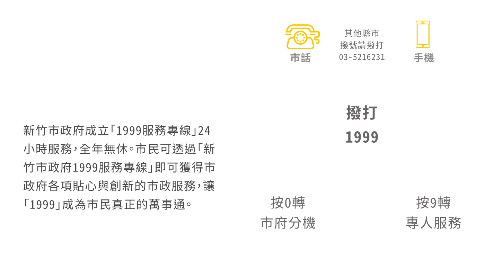
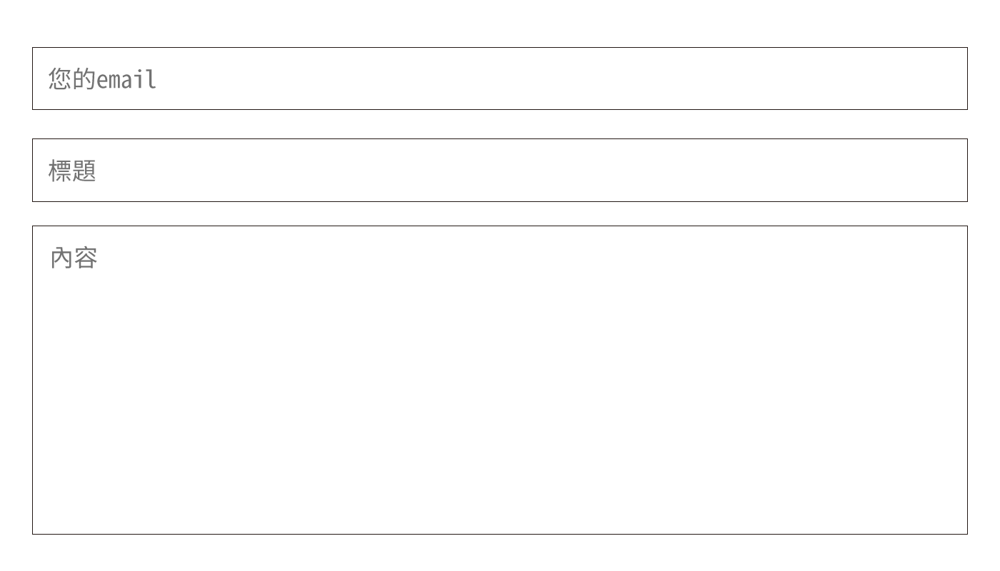

為提供、整合民眾便捷的交通違規檢舉管道、有效管考案件處理情形、提升為民服務品質，特於本局網站增設「線上檢舉交通違規專區」，歡迎多加使用
如您未申請或不同意留下電子郵件信箱地址，請下載「親自或書面郵寄檢舉表格（DOC 檔） （PDF 檔）」，填妥各欄資料後，檢具違規證據資料（光碟片），親送或郵寄至 30044 新竹市北區北大路 218 號 3 樓（新竹市交通警察隊）即可，經本局交通權責單位檢視及審核無訛後，處理結果將以電話或簡訊方式告知（為符合政府節能減紙政策，將不寄送書面答覆書函）。
可以向新竹市環保局檢舉
市民如發現營建工程施工有噪音及空氣污染之情形發生，可撥打免費公害陳情專線 0800-066-666 或新竹市環境保護局 03-536-8920 檢舉，共同維護新竹市生活品質。

